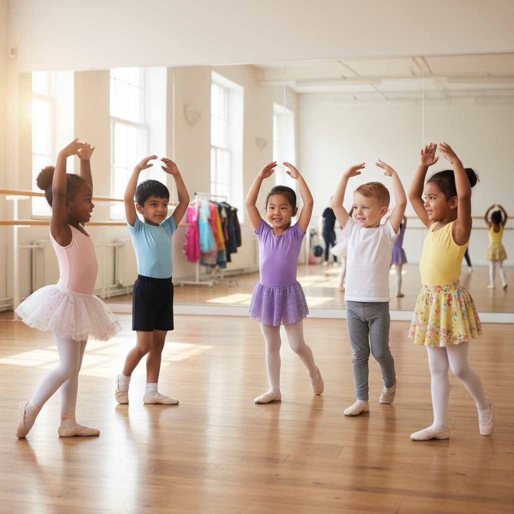

우리 아이 유아발레, 언제 시작해야 가장 좋을까요? 데이터 박사가 제안하는 적정 연령과 효과적인 시작 가이드
사랑하는 자녀의 성장을 지켜보는 모든 부모님들께서는 아이의 무한한 잠재력을 끌어내 줄 최적의 교육 시기에 대해 깊은 고민을 하실 것입니다. 특히 '유아발레 시작 나이'는 많은 부모님들께서 궁금해하시는 핵심 질문 중 하나입니다. 아이의 신체적, 인지적, 정서적 발달에 가장 적합한 시기는 언제이며, 어떤 긍정적인 영향을 기대할 수 있는지 알고 싶어 하시는 것은 당연합니다.
영유아 발달 전문가로서, 저는 국내외 신뢰할 수 있는 연구 자료와 통계를 바탕으로 유아발레 시작 나이에 대한 명확하고 실질적인 정보를 제공해 드리고자 합니다. 유아발레는 단순히 춤을 배우는 것을 넘어, 우리 아이들의 전인적인 성장을 돕는 통합적인 교육 프로그램으로 이해되어야 합니다.
유아발레, 즐거운 놀이를 통해 아이를 성장시키는 예술 활동입니다

함께 즐겁게 발레를 배우는 아이들의 모습
유아발레는 성인 발레와는 그 목적과 접근 방식에서 큰 차이를 보입니다. 성인 발레가 고난도의 기술 습득과 완벽한 동작 표현에 중점을 둔다면, 유아발레는 아이들의 신체적, 인지적, 정서적 발달을 돕는 데 초점을 맞춥니다. 아이들은 리듬감 있는 음악에 맞춰 몸을 움직이며 자연스럽게 신체 인지 능력을 향상시키고, 자유로운 창의적 표현력을 기르게 됩니다.
실제로, 영국 왕립 발레 아카데미(Royal Academy of Dance)가 발표한 보고서에 따르면, 유아기 무용 교육은 어린이의 전반적인 발달에 핵심적인 요소이며, 특히 신체 조정 능력과 공간 지각력 발달에 탁월한 효과가 있다고 강조합니다. 놀이와 예술이 결합된 유아발레는 아이들에게 긍정적인 신체 활동 경험을 제공하며, 학습에 대한 즐거움을 일깨워주는 중요한 통로가 됩니다.
유아발레 시작 나이를 결정할 때 고려해야 할 핵심 발달 단계
아이에게 유아발레를 언제 시작하게 할지 결정할 때에는 아이의 개별적인 발달 수준과 다음 세 가지 발달 측면을 종합적으로 고려하는 것이 중요합니다.
1. 신체 발달 측면: 대근육 발달 및 협응력
유아발레는 점프, 균형 잡기, 회전 등 대근육을 활발히 사용하는 동작들을 포함합니다. 이러한 동작들을 안정적으로 수행하기 위해서는 일정 수준 이상의 대근육 발달과 신체 조절 능력이 선행되어야 합니다.
- 만 2세 (24개월~35개월): 아직 대근육 발달이 미숙하여 균형 감각이 불안정하고, 강사의 지시에 따라 정교하게 몸을 움직이는 데 어려움을 겪을 수 있습니다. 무리한 구조화된 활동은 아이에게 흥미를 잃게 하거나 스트레스를 줄 수 있습니다.
- 만 3세 (36개월~47개월): 대부분의 아이들이 한 발로 서거나 가볍게 점프하는 등 기본적인 대근육 운동 능력을 습득하는 시기입니다. 걷고 뛰는 것이 안정적이며, 신체 조정 능력과 민첩성이 향상되기 시작합니다. 이 시기에는 놀이 중심의 발레 활동을 통해 움직임의 즐거움을 경험하기에 적합합니다.
- 만 4-5세 (48개월~60개월 미만): 더욱 복합적인 동작을 시도하고 모방할 수 있는 신체적 준비가 충분히 이루어집니다. 유연성과 지구력 또한 점진적으로 향상되어, 발레의 기본기를 보다 체계적으로 배울 수 있습니다.
미국 소아과 학회(American Academy of Pediatrics)는 영유아기 신체 활동이 대근육 발달과 협응력 증진에 필수적이라고 강조하며, 특히 3세 이후부터는 구조화된 신체 활동을 통해 운동 능력을 체계적으로 발달시키는 것이 중요하다고 밝힙니다.
2. 인지 및 정서 발달 측면: 지시 이해 및 집중력
발레 수업은 단순히 몸을 움직이는 것을 넘어, 강사의 지시를 이해하고 기억하며, 음악에 맞춰 동작을 수행하는 인지적 과정을 요구합니다. 또한, 자신의 감정을 표현하고 조절하는 능력도 중요하게 작용합니다.
- 만 2세: 집중 시간이 매우 짧고, 언어적 지시를 이해하는 능력이 아직 제한적일 수 있습니다. 그룹 활동보다는 개별 놀이에 더 익숙하며, 감정 조절이 미숙할 수 있습니다.
- 만 3세: 간단한 지시를 이해하고 따를 수 있으며, 짧은 시간 동안 특정 활동에 집중할 수 있는 능력이 발달합니다. 또래와의 상호작용에 관심을 보이기 시작하며, 자신의 감정을 몸으로 표현하는 것에 흥미를 보입니다.
- 만 4-5세: 더욱 복잡한 동작 시퀀스를 기억하고 수행할 수 있으며, 수업 규칙을 이해하고 지키는 사회적 인지 능력이 향상됩니다. 자신의 감정을 다양하게 표현하고 조절하는 능력도 함께 발달하여, 예술 활동을 통한 정서적 해소에 효과적입니다.
유니세프(UNICEF)의 '조기 아동기 발달' 보고서에 따르면, 조기 아동기 예술 활동은 인지 발달과 사회성 증진에 크게 기여하며, 특히 집중력 향상과 문제 해결 능력 발달에 긍정적인 영향을 미친다고 보고합니다.
3. 사회성 발달 측면: 그룹 활동 참여 및 협력
유아발레는 대부분 그룹 수업으로 진행됩니다. 이는 아이들이 또래와 함께 활동하고, 선생님의 지도 아래 협력하는 귀중한 경험을 제공합니다.
- 만 2세: '나' 중심적 사고가 강하며, 아직 또래와 협력하여 활동하는 것이 어렵습니다. 병행 놀이(각자 놀되 같은 공간에 있는) 단계에 머무는 경우가 많습니다.
- 만 3세: 또래에게 관심을 보이고, 함께 활동하는 것에 대한 흥미가 생기는 시기입니다. 간단한 규칙을 따르며 단체 활동에 참여할 수 있으며, 선생님의 지도를 통해 사회적 상호작용을 배우기 시작합니다.
- 만 4-5세: 친구들과의 관계 속에서 자신의 역할과 타인의 역할을 이해하고, 협동심과 배려심을 기를 수 있습니다. 다른 친구들의 동작을 보고 배우거나 함께 호흡을 맞추며 사회적 기술을 적극적으로 발달시킵니다.
데이터 박사가 제안하는 유아발레 적정 연령: 3세부터 5세
국내외 영유아 발달 연구와 실제 교육 현장의 통계를 종합해 볼 때, 유아발레 시작 나이로 가장 이상적인 시기는 만 3세에서 5세 사이로 볼 수 있습니다. 이 시기 아이들은 신체적, 인지적, 정서적으로 발레와 같은 구조화된 신체 활동을 시작하기에 충분한 준비가 되어 있기 때문입니다.
만 3세 (36개월 이상): 발레와의 첫 만남, 즐거운 놀이처럼!
- 신체적 준비: 대근육 발달이 충분하여 점프, 한 발 서기 등 기본적인 동작 수행이 가능합니다. 움직임에 대한 호기심이 왕성합니다.
- 인지적 준비: 간단한 지시를 이해하고 짧은 시간 집중할 수 있으며, 음악과 리듬에 대한 반응이 활발해집니다.
- 사회적 준비: 또래와의 그룹 활동에 참여하며 즐거움을 느끼기 시작하고, 선생님과의 상호작용을 통해 사회성을 기릅니다.
- 추천 프로그램: 이 시기에는 발레의 기본 자세와 스트레칭, 리듬감을 익히는 데 중점을 두며, 율동과 동화를 접목한 놀이 중심의 프로그램이 가장 적합합니다. 발레복을 입는 즐거움, 친구들과 함께하는 활동 자체에 의미를 두는 것이 중요합니다.
만 4-5세 (48개월 ~ 60개월 미만): 기본기 다지기, 표현력 향상!
- 신체적 준비: 균형 감각과 협응력이 더욱 향상되어 조금 더 복합적인 발레 동작을 안정적으로 배울 수 있습니다. 유연성과 근력도 점진적으로 발달합니다.
- 인지적 준비: 집중 시간이 길어지고, 동작 순서를 기억하며 수행하는 능력이 발달하여, 비교적 체계적인 수업 진행이 가능합니다.
- 정서적 준비: 자신의 감정을 신체로 표현하는 데 적극적이며, 새로운 동작을 배우면서 자신감과 성취감을 느낄 수 있습니다.
- 추천 프로그램: Children's Health Research Center (CHRC)의 2018년 연구는 4-5세 아동이 발레와 같은 구조화된 신체 활동에서 더 높은 학습 효과와 정서적 만족도를 보인다고 밝혔습니다. 이 시기에는 보다 체계적인 발레 동작과 표현력을 기르는 데 중점을 두는 것이 효과적이며, 짧은 작품을 배우거나 공연에 참여하며 성취감을 높일 수 있습니다.
만 2세 이하의 경우: 아직 발달적 준비가 미흡하여 오히려 흥미를 잃거나 스트레스를 받을 수 있습니다. 이 시기에는 자유로운 신체 놀이나 엄마와 함께하는 베이비 발레와 같은 비정형적인 활동을 통해 자연스러운 움직임을 유도하고, 신체 활동에 대한 긍정적인 경험을 쌓는 것이 더욱 중요합니다.
유아발레가 아이의 성장에 미치는 다각적인 긍정적 영향
적절한 시기에 시작된 유아발레는 아이의 전반적인 발달에 다음과 같은 다각적인 이점을 제공하여, 건강하고 행복한 성장을 지원합니다.
신체적 발달:
- 바른 자세 및 체형 교정: 코어 근육을 강화하고 유연성을 증진시켜 성장기 아이들의 바른 자세 유지에 도움을 주며, 성장판을 자극하여 키 성장에도 긍정적인 영향을 미칠 수 있습니다.
- 균형 감각 및 협응력 향상: 다양한 발레 동작을 통해 신체 조절 능력과 민첩성이 발달하고, 좌뇌와 우뇌를 동시에 사용하며 전반적인 운동 신경 발달에 기여합니다.
- 근력 및 유연성 증진: 스트레칭과 반복적인 동작으로 근육을 강화하고 관절의 가동 범위를 넓혀 신체의 유연성을 극대화합니다.
- 리듬감 및 운동 감각 발달: 음악에 맞춰 몸을 움직이며 자연스럽게 리듬감과 운동 감각을 기르게 되어, 다른 스포츠 활동에도 긍정적인 영향을 미칩니다.
- 대한체육회 연구에 따르면 꾸준한 유아체육 활동은 성장기 아동의 골밀도 증가 및 비만 예방에 효과적입니다.
인지적 발달:
- 집중력 및 기억력 향상: 강사의 지시를 듣고 동작 순서를 기억하며 수행하는 과정에서 집중력과 인지 능력이 발달합니다. 이는 학업 성취에도 긍정적인 영향을 미칠 수 있습니다.
- 공간 지각 능력: 넓은 공간에서 움직이며 자신의 위치와 움직임을 인식하는 능력이 향상되어, 공간 개념을 발달시키는 데 도움을 줍니다.
- 창의적 사고 증진: 정해진 동작 외에도 음악에 맞춰 자유롭게 표현하는 시간을 통해 아이들은 자신만의 상상력을 발휘하고 창의성을 발달시킬 수 있습니다.
- 하버드대학교 교육대학원 연구는 예술 교육이 아동의 문제 해결 능력과 창의적 사고를 촉진한다고 보고했습니다.
정서적 및 사회적 발달:
- 자신감 및 자아 존중감 형성: 새로운 동작을 성공적으로 수행하면서 성취감을 느끼고 자신감을 얻습니다. 발표회를 통해 무대에 서는 경험은 긍정적인 자아 개념 형성에 큰 도움이 됩니다.
- 표현력 및 감정 조절: 신체 움직임을 통해 자신의 감정을 자유롭게 표현하고, 긍정적인 방식으로 감정을 표출하는 방법을 배웁니다.
- 사회성 및 협동심: 또래와 함께 활동하며 협동하고 배려하는 방법을 배우고, 그룹 규칙을 준수하며 자연스럽게 사회성을 기릅니다. 공동의 목표를 향해 노력하는 과정에서 팀워크의 중요성을 깨닫습니다.
- 규율 및 인내심: 반복적인 연습을 통해 인내심과 꾸준함의 중요성을 깨닫고, 스스로를 통제하는 능력(자기 조절 능력)을 기르게 됩니다.
우리 아이, 유아발레를 시작할 준비가 되었을까요? 자가 진단 체크리스트
모든 아이는 고유한 발달 속도를 가집니다. 따라서 특정 나이에 얽매이기보다는 우리 아이의 개별적인 준비도를 관찰하는 것이 중요합니다. 다음 체크리스트를 통해 아이의 유아발레 시작 준비도를 점검해 보시기 바랍니다.
- 간단한 언어적 지시(예: "앉아", "일어서", "손뼉 쳐")를 이해하고 따를 수 있습니까?
- 몸을 움직이는 것을 좋아하고, 춤추거나 뛰어노는 것을 즐겁게 생각합니까?
- 짧은 시간(약 5~10분) 동안 하나의 활동에 집중할 수 있는 능력이 있습니까?
- 또래 친구들이나 다른 사람들과 함께 활동하는 것에 관심과 흥미를 보입니까?
- 발레복이나 발레 동작을 보거나 음악을 들었을 때, 흥미나 호기심을 표현한 적이 있습니까?
- 스스로 어떤 활동을 하고 싶다고 먼저 이야기하거나 적극적으로 참여 의사를 표현합니까?
이 질문들에 대한 긍정적인 답변이 많을수록 아이는 유아발레를 시작할 준비가 되어 있다고 판단할 수 있습니다. 아이의 눈빛과 행동에서 즐거움과 호기심을 발견하는 것이 가장 중요한 지표입니다.
성공적인 유아발레 프로그램 선택을 위한 가이드라인
아이에게 맞는 최적의 유아발레 프로그램을 선택하는 것은 성공적인 발레 경험의 첫걸음입니다. 다음 사항들을 고려하여 신중하게 선택하시기를 권장합니다.
- 연령별 맞춤 커리큘럼: 아이의 발달 단계에 맞춰 놀이 중심의 즐거운 수업이 진행되는지 확인합니다. 너무 난이도가 높은 기술 위주의 수업은 아이의 흥미를 떨어뜨리고 신체에 무리를 줄 수 있습니다.
- 전문성과 따뜻함을 겸비한 강사진: 영유아 발달에 대한 이해가 높고, 아이들의 눈높이에 맞춰 소통하며 긍정적인 분위기를 이끌어갈 수 있는 전문 강사인지 확인합니다. 아이들에게 긍정적인 롤 모델이 될 수 있는 분이 좋습니다.
- 안전하고 쾌적한 교육 환경: 안전한 바닥재(충격 흡수), 청결한 연습실, 적절한 온도와 습도 등 아이들이 안전하고 편안하게 활동할 수 있는 공간인지 점검합니다. 공기 질 관리 여부도 중요한 요소입니다.
- 긍정적이고 즐거운 수업 분위기: 아이들이 경쟁보다는 즐거움을 느끼고, 자신의 개성을 자유롭게 표현할 수 있도록 격려하는 분위기의 학원인지 확인합니다. 자유로운 표현과 칭찬이 아이의 자존감 향상에 큰 영향을 미칩니다.
- 체험 수업 또는 상담 기회 활용: 등록 전 아이와 함께 체험 수업에 참여하거나 충분한 상담을 통해 학원의 교육 철학, 프로그램 내용, 강사 스타일 등을 직접 확인하는 것이 현명합니다.
자주 묻는 질문 (FAQ)
Q1: 남자아이도 유아발레를 해도 괜찮을까요? A: 물론입니다. 발레는 성별과 관계없이 모든 아이에게 신체 발달과 예술적 감수성을 길러주는 훌륭한 활동입니다. 특히 남자아이들에게는 유연성, 근력, 균형 감각을 향상시키고 협응력을 길러주어 축구나 태권도 등 다른 운동 능력 향상에도 큰 도움이 됩니다. 고정관념에서 벗어나 아이의 흥미와 잠재력을 지지해 주시는 것이 중요합니다.
Q2: 유아발레 시작 전, 특별히 준비할 것이 있나요? A: 아이가 발레에 대한 긍정적인 인식을 가질 수 있도록 집에서 음악에 맞춰 자유롭게 춤추거나 율동하는 시간을 가져보는 것이 좋습니다. 발레 관련 그림책을 함께 읽거나 발레 영상을 보여주며 호기심을 자극하는 것도 좋은 방법입니다. 특별한 신체적 훈련보다는 즐거운 마음으로 참여할 수 있는 분위기를 만들어 주는 것이 가장 중요합니다.
Q3: 아이가 발레에 흥미를 잃으면 어떻게 해야 할까요? A: 아이가 흥미를 잃는 것은 자연스러운 과정입니다. 강요하기보다는 아이의 이야기를 충분히 들어주고, 다른 활동으로 잠시 전환해 보는 것을 고려해 보십시오. 무용의 한 형태일 뿐, 아이에게 맞는 다른 신체 활동이나 예술 분야를 찾아보는 것도 좋은 방법입니다. 중요한 것은 아이가 긍정적인 경험을 통해 스스로 선택하고 즐길 수 있도록 돕는 것입니다.
결론: 아이의 흥미와 행복이 최우선입니다
유아발레 시작 나이는 아이의 개별 발달 속도와 흥미를 최우선으로 고려해야 하는 중요한 결정입니다. 비록 만 3세에서 5세 사이가 신체적, 인지적, 정서적으로 가장 적절한 시기로 권장되지만, 이는 일반적인 가이드라인일 뿐 모든 아이에게 절대적인 기준이 될 수는 없습니다.
사랑하는 우리 아이가 발레에 대한 작은 호기심이라도 보이고, 수업에 참여할 준비가 되어 있다고 판단된다면 망설이지 마시고 긍정적인 경험을 선물해 주십시오. 유아발레는 아이들이 건강하게 성장하고, 자신감을 키우며, 아름다운 예술을 통해 세상을 배우는 소중한 기회가 될 것입니다. 영유아 발달 전문가로서, 저는 부모님들이 아이의 눈높이에서 가장 행복하고 의미 있는 선택을 하시기를 진심으로 응원합니다.